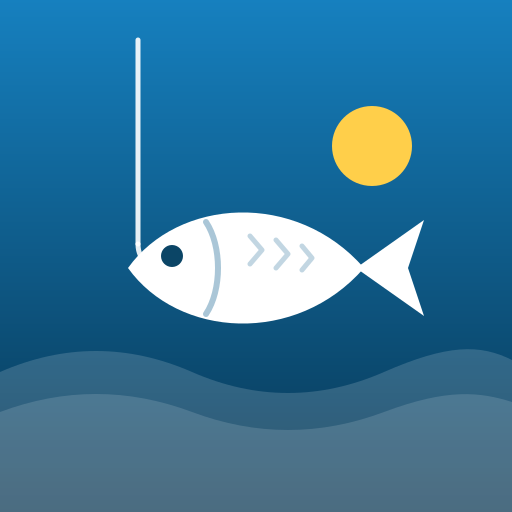

現在地は小数2けた（約1km）に丸めて、気象データの取得だけに使います。保存も送信もしません。
地域と狙いを選んで「予報を見る」を押してください。
ほしい釣り場がないときは、X か Instagram で「地点リクエスト：〇〇港」と送ってください。順番に増やします。

行ける日が少ない人のための「行くならこの日・この時間」判定
現在地は小数2けた（約1km）に丸めて、気象データの取得だけに使います。保存も送信もしません。
ほしい釣り場がないときは、X か Instagram で「地点リクエスト：〇〇港」と送ってください。順番に増やします。